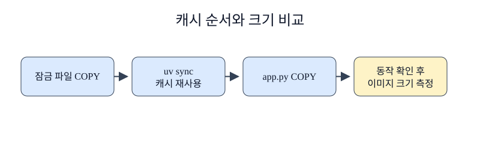

한경 KDT · LLM Agent 개발 & 바이브코딩 · Part 7 · 프로덕션 엔지니어링 · Ch 32 · Docker와 컨테이너
이미지가 실행된다는 사실만으로 배포 준비가 끝나지 않습니다. 큰 이미지는 네트워크 전송과 저장에 더 많은 자원을 사용하고, 불필요한 도구는 점검 범위를 넓힙니다. 그러나 크기 숫자만 줄이다가 실행 파일이나 인증서까지 빼면 서비스가 실패할 수 있습니다. 이 절에서는 같은 앱을 두 방식으로 빌드하고 크기, 캐시, 동작을 한 묶음으로 확인합니다.
2절의 최적화 Dockerfile은 잠금 파일과 앱 코드를 다른 COPY 명령으로 나눴습니다. 비교 대상인 Dockerfile.baseline은 전체 폴더를 먼저 복사하고 한 단계 안에서 빌드 도구와 uv 환경을 모두 남깁니다. 두 파일은 같은 app.py, pyproject.toml, uv.lock을 사용하므로 애플리케이션 기능은 고정됩니다.
주방에서 자주 쓰는 재료를 먼저 준비해 두면 주문마다 처음부터 손질하지 않아도 됩니다. Docker 빌드 캐시(build cache)는 이전 명령의 입력이 같을 때 결과 레이어를 재사용합니다. COPY 대상 파일이 바뀌거나 RUN 명령이 바뀌면 해당 단계의 캐시가 무효화되고 뒤 단계도 다시 계산됩니다. 그래서 변경 빈도가 낮은 잠금 파일을 먼저 복사하고, 자주 바뀌는 앱 코드를 뒤에 복사합니다. 이미지 크기는 docker image inspect의 .Size 값을 바이트로 읽어 같은 Docker 데몬에서 비교합니다. 이 값은 현재 플랫폼의 로컬 이미지 크기이며 레지스트리 압축 전송량과 같지 않습니다. .dockerignore는 빌드 문맥에서 .venv, 노트북, 비밀 파일을 제외해 전송량과 우발적 포함 위험을 줄입니다.
Docker 빌드 캐시는 명령과 그 명령이 의존하는 파일이 같을 때 이전 레이어를 재사용합니다. 어느 COPY가 바뀌면 그 단계뿐 아니라 뒤의 단계도 다시 실행됩니다. 그래서 자주 바뀌지 않는 의존성 잠금 파일을 먼저 복사해 설치하고, 자주 바뀌는 애플리케이션 소스는 뒤에서 복사합니다. 출력의 CACHED는 해당 빌드에서 재사용된 단계의 관찰값입니다.
캐시 적중 수와 이미지 크기는 서로 다른 지표입니다. 캐시가 많아도 최종 이미지가 클 수 있고, 멀티스테이지로 작은 이미지를 만들어도 첫 빌드는 오래 걸릴 수 있습니다. 비교할 때는 같은 빌드 컨텍스트와 플랫폼을 사용하고, --no-cache와 --pull이 각각 단계 재실행과 새 베이스 확인이라는 다른 역할임을 구분합니다.

노트북은 기준 이미지와 최적화 이미지를 차례로 빌드합니다. 측정값은 기준 418,111,662바이트, 최적화 57,560,686바이트였고 감소율은 약 86.2%였습니다. 이어서 최적화 이미지를 같은 입력으로 다시 빌드해 CACHED 표시를 세 번 이상 확인합니다. 마지막으로 두 이미지 모두에서 health() 함수를 호출해 같은 JSON을 반환하는지 검사합니다.
준비된 Python 3.12 노트북에서 첫 셀부터 Shift+Enter로 하나씩 실행합니다. 안내한 결과를 먼저 확인하고 지정한 값 하나를 바꿔 비교합니다. 문서를 사용하는 실습은 파일 묶음이 필요합니다. 노트북과 실습 파일 함께 받기 · 처음 실습하는 방법. 전체 코드 복사에는 실험 셀 전체가 포함됩니다. 이 HTML에서는 코드를 실행하지 않습니다.
Docker Desktop의 실습 전용 이미지와 스택만 사용해 결과를 확인합니다.
두 Dockerfile의 빌드와 측정에 같은 명령 함수를 사용합니다.
이 준비 셀은 현재 폴더와 부모 폴더에서 Dockerfile.baseline이 있는 Ch32 실습 폴더를 찾습니다. run(*args, check=True)은 모든 Docker 명령을 그 폴더에서 실행하고 표준 출력·오류와 종료 코드를 CompletedProcess로 반환합니다. 실패 자체를 관찰하는 셀만 check=False를 전달하며, 마지막에는 Docker Engine이 응답하는지 확인합니다.
# Docker 명령을 일정한 폴더에서 실행하고 실패도 결과로 받습니다.
from pathlib import Path
import json, subprocess, time, urllib.request
# 챕터 폴더와 notebooks 폴더 어디에서 시작해도 제공 자료를 찾습니다.
candidates = [parent / "labs/part7/ch32-docker" for parent in (Path.cwd(), *Path.cwd().parents)]
candidates += [Path.cwd(), Path.cwd().parent]
LAB = next(path for path in candidates if (path / "Dockerfile.baseline").is_file())
def run(*args: str, check: bool = True) -> subprocess.CompletedProcess[str]:
return subprocess.run(args, cwd=LAB, text=True, capture_output=True, check=check)
version = run("docker", "version", "--format", "{{.Server.Version}}")
print("Docker Engine", version.stdout.strip())
assert version.stdout.strip()Docker Engine 29.4.1
기준 이미지와 최적화 이미지를 같은 애플리케이션 코드로 만듭니다.
Docker 빌드 캐시는 명령과 그 명령이 의존하는 파일이 같을 때 이전 레이어를 재사용합니다. 어느 COPY가 바뀌면 그 단계뿐 아니라 뒤의 단계도 다시 실행됩니다. 그래서 자주 바뀌지 않는 의존성 잠금 파일을 먼저 복사해 설치하고, 자주 바뀌는 애플리케이션 소스는 뒤에서 복사합니다. 출력의 CACHED는 해당 빌드에서 재사용된 단계의 관찰값입니다.
# 빌드 파일만 다르고 앱과 잠금 파일은 같습니다.
run("docker", "build", "-f", "Dockerfile.baseline", "-t", "ch32-baseline:local", ".")
run("docker", "build", "-f", "Dockerfile", "-t", "ch32-optimized:local", ".")
print("two images built")two images built
Docker가 보고한 압축 전 이미지 크기를 바이트 단위로 읽습니다.
# 동일한 inspect 형식으로 크기를 비교합니다.
sizes: dict[str, int] = {}
for name in ("ch32-baseline:local", "ch32-optimized:local"):
result = run("docker", "image", "inspect", name, "--format", "{{.Size}}")
sizes[name] = int(result.stdout)
reduction = 1 - sizes["ch32-optimized:local"] / sizes["ch32-baseline:local"]
print(sizes, "reduction", f"{reduction:.1%}")
assert reduction >= 0.5{'ch32-baseline:local': 418111662, 'ch32-optimized:local': 57560686} reduction 86.2%
소스가 바뀌지 않은 상태로 다시 빌드해 CACHED 기록을 셉니다.
# 일반 진행 출력에서 캐시 재사용 표시를 확인합니다.
again = run("docker", "build", "--progress=plain", "-f", "Dockerfile", "-t", "ch32-optimized:local", ".")
combined = again.stdout + again.stderr
cached_count = combined.count("CACHED")
print("cached steps", cached_count)
assert cached_count >= 3cached steps 9
이번 수치는 arm64와 고정된 태그에서 얻었으며 다른 시점에는 달라질 수 있습니다.
캐시 적중 수와 이미지 크기는 서로 다른 지표입니다. 캐시가 많아도 최종 이미지가 클 수 있고, 멀티스테이지로 작은 이미지를 만들어도 첫 빌드는 오래 걸릴 수 있습니다. 비교할 때는 같은 빌드 컨텍스트와 플랫폼을 사용하고, --no-cache와 --pull이 각각 단계 재실행과 새 베이스 확인이라는 다른 역할임을 구분합니다.
# 두 이미지가 같은 HTTP 동작을 제공하는지도 함께 검사합니다.
for name in sizes:
result = run("docker", "run", "--rm", name, "python", "-c", "from app import health; print(health())")
print(name, result.stdout.strip())
assert "'status': 'ok'" in result.stdoutch32-baseline:local {'status': 'ok'}
ch32-optimized:local {'status': 'ok'}
확인할 점 — 명령의 종료 코드와 실제 출력이 본문의 설명과 같은지 확인합니다. 실습 전용 이름을 사용했으므로 다른 Docker 자원을 변경하지 않습니다.
최적화 이미지는 기준 이미지의 절반보다 작다는 과제 기준을 충족했습니다. 이번 차이는 큰 Debian 기반 이미지와 빌드 환경을 남긴 기준 방식, slim runtime과 선택 복사를 사용한 최적화 방식이 함께 만든 결과입니다. 따라서 멀티스테이지만의 순수 효과로 해석할 수는 없습니다. 또한 한 차례의 반복 빌드에서 CACHED 표시가 나온 것은 입력이 같을 때 재사용됐음을 보여 주지만 여러 빌드 서버의 공유 캐시 성능을 나타내지 않습니다. 기능 검사는 /health의 Python 함수 수준이며 4절에서 실제 HTTP와 DB 연결까지 확인합니다.
--no-cache는 깨끗한 재검증에 유용하지만 매 빌드의 기본값으로 사용하면 캐시 이점을 잃습니다. 기반 이미지를 새로 받을 때는 --pull의 의미도 구분합니다.다음 학습과 이어지는 지점 — 4절에서는 최적화 이미지를 PostgreSQL과 연결해 여러 컨테이너를 하나의 Compose 스택으로 관리합니다.
앱 코드를 잠금 파일보다 먼저 COPY하면 어떤 일이 생길 수 있나요?
정답과 해설 — 앱 코드가 바뀔 때 의존성 설치 레이어까지 캐시가 무효화되어 빌드 시간이 늘 수 있습니다.
이번 86.2% 감소를 모든 컴퓨터에서 그대로 기대할 수 없는 이유는 무엇인가요?
정답과 해설 — 플랫폼, 기반 이미지 digest, Docker 저장 방식과 패키지 버전에 따라 크기가 달라지기 때문입니다.
작은 이미지가 정상 동작하는지 무엇으로 확인했나요?
정답과 해설 — 두 이미지에서 같은 health 함수를 실행해 동일한 상태 값을 검사했습니다.
.dockerignore에 .env를 넣는 이유는 무엇인가요?
정답과 해설 — 비밀값이 빌드 문맥과 이미지 레이어에 들어가는 일을 막기 위해서입니다.